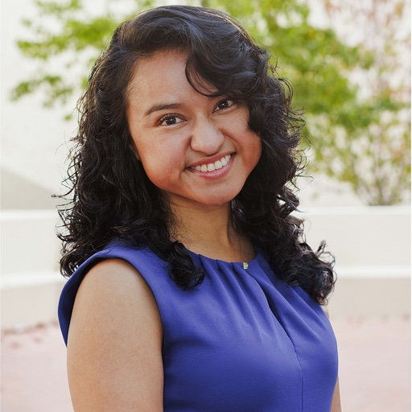
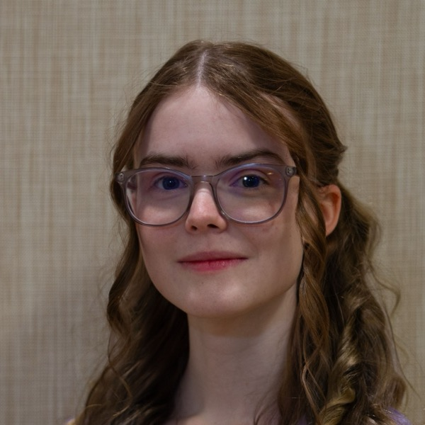
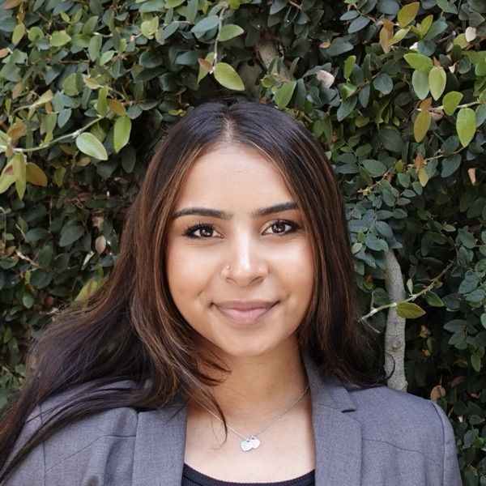
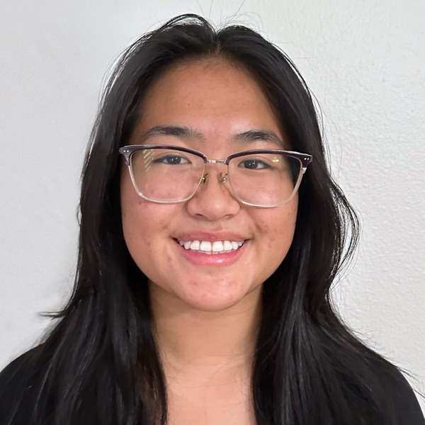
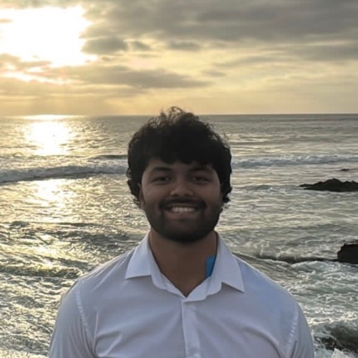
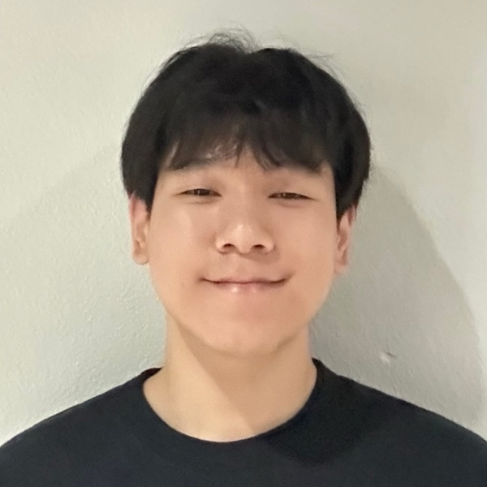

The people in the room.






Everyone 19 3 6 5 5 5 9
Leadership
D D a a v v i i d d K K i i r r s s h h Principal investigator · Professor of Cognitive Science +
Principal investigator · Professor of Cognitive Science
Professor and past chair of Cognitive Science at UC San Diego. D.Phil. from Oxford, postdoctoral work at the MIT AI Lab, and visiting posts at MIT, Stanford and the Bartlett School of Architecture, UCL. He writes on situated and embodied cognition: how space, bodies and objects become tools for thought. Co-director of the Arthur C. Clarke Center for Human Imagination and on the board of the Academy of Neuroscience for Architecture.
Publications Website Faculty page
E E s s t t e e l l i i t t a a L L e e i i j j a a Lab lead +
E E l l l l a a h h F F e e s s s s e e n n d d e e n n Project Manager +
Project Manager
LinkedIn
Research assistants
A A d d i i t t y y a a D D a a v v a a n n a a m m On-Site Integration & Quality Assurance Lead +
On-Site Integration & Quality Assurance Lead
LinkedIn
S S a a i i G G o o g g u u l l a a Master Clock Project Coordinator & Equipment Operations RA +
Master Clock Project Coordinator & Equipment Operations RA
M M e e h h e e r r H H a a i i d d e e r r Data Analysis & Coordination RA +
Data Analysis & Coordination RA
LinkedIn
J J a a c c l l y y n n H H a a m m a a i i Participant Recruitment & Outreach Coordinator +
Participant Recruitment & Outreach Coordinator
LinkedIn
R R y y a a n n K K a a s s e e m m Data Analysis, Statistics & Visualization Specialist +
M M o o m m o o K K i i h h a a r r a a Research Visualization & Cross-Team Integration Lead +
Research Visualization & Cross-Team Integration Lead
LinkedIn Website
J J i i h h o o L L e e e e Data Timing & Phase Reconstruction RA +
Data Timing & Phase Reconstruction RA
GitHub
M M i i k k a a y y l l a a L L o o r r e e n n z z o o Plant & Biophilic Environment Specialist +
Plant & Biophilic Environment Specialist
H H a a u u n n u u i i L L u u c c i i a a n n i i Research Data QA, Scoring & Analysis RA +
Research Data QA, Scoring & Analysis RA
A A n n r r u u i i M M a a Wearable Signal Quality & Validation Analyst +
Wearable Signal Quality & Validation Analyst
LinkedIn
M M a a c c i i P P h h a a n n Protocol, IRB & Research Operations Coordinator +
Protocol, IRB & Research Operations Coordinator
A A l l y y z z a a R R e e c c l l u u s s a a d d o o Plant Stewardship & Plant Health Monitoring RA +
Plant Stewardship & Plant Health Monitoring RA
C C r r y y s s t t a a l l H H a a r r m m o o n n y y S S c c h h w w a a r r z z Electrical & Instrumentation / Equipment Operations RA +
Electrical & Instrumentation / Equipment Operations RA
LinkedIn
S S k k y y T T r r a a n n Research Software, Front-End & Experiment Tools Developer +
Research Software, Front-End & Experiment Tools Developer
LinkedIn
S S h h a a n n n n o o n n V V o o o o n n g g Plant Stewardship Lead / Plant Care Oversight +
Plant Stewardship Lead / Plant Care Oversight
L L u u c c y y X X u u e e Respiratory Physiology & Stress Recovery Analysis RA +
Respiratory Physiology & Stress Recovery Analysis RA